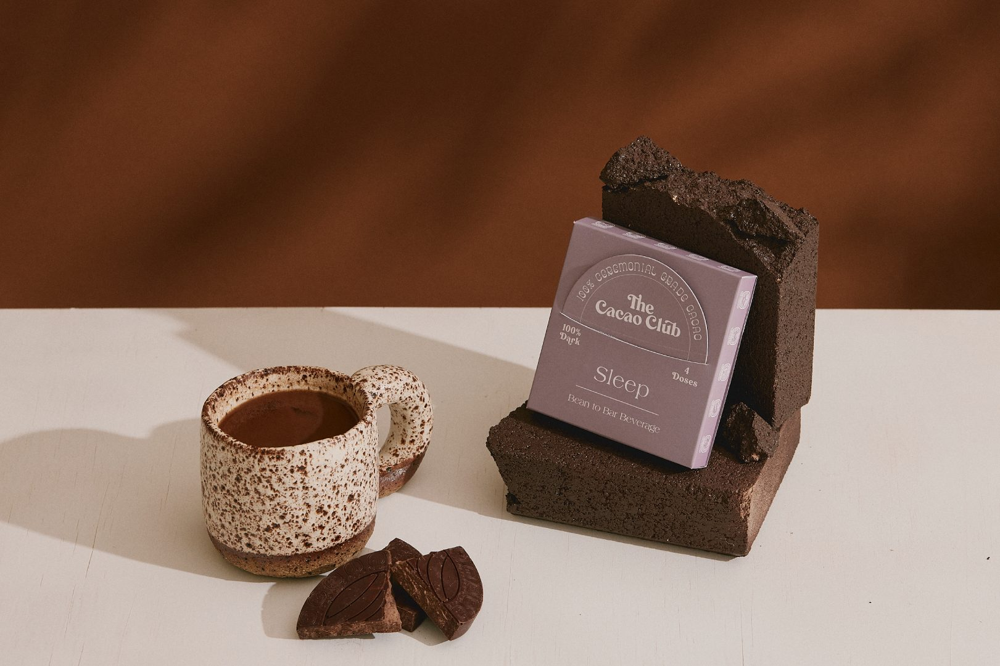
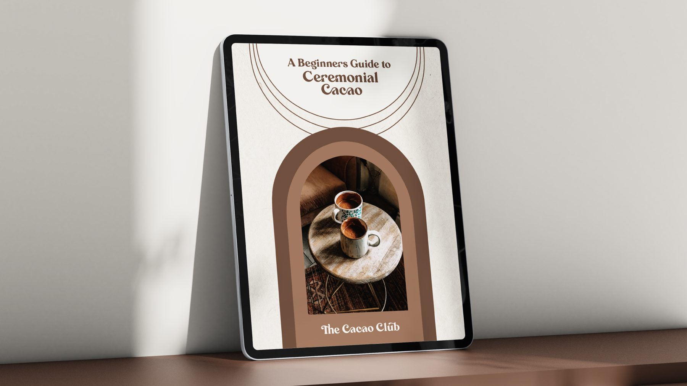
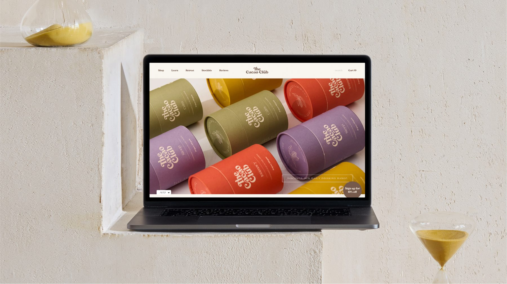
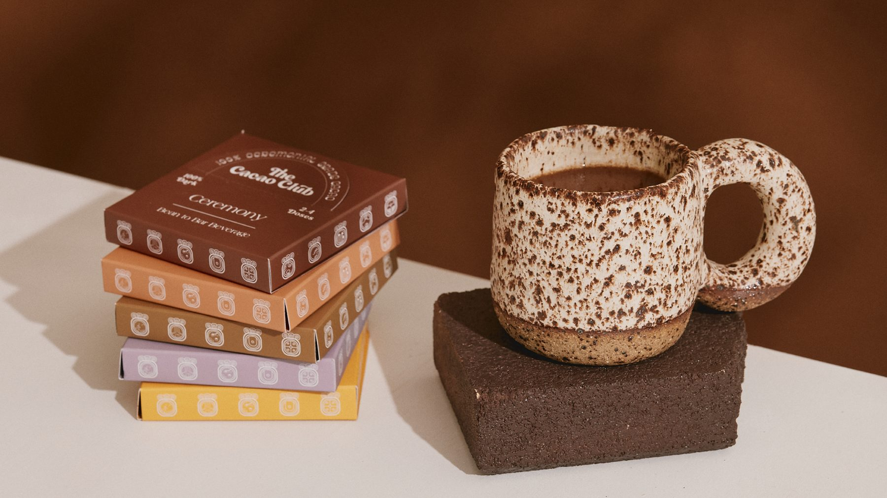
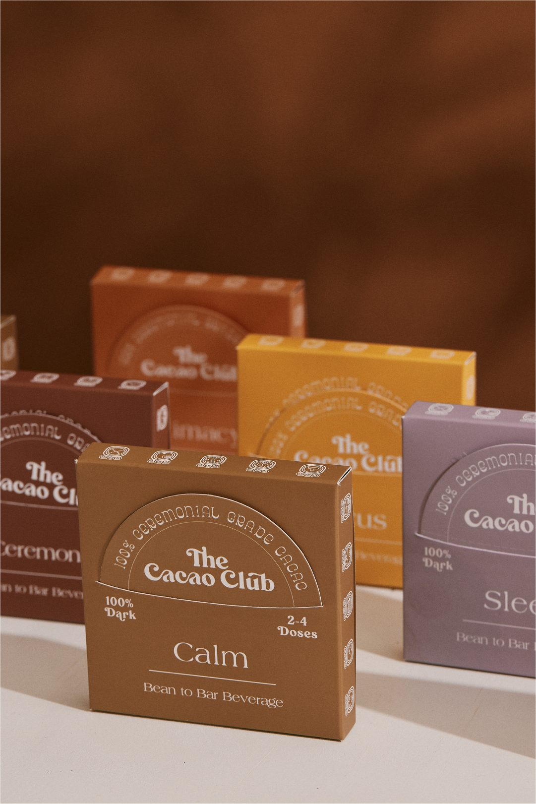
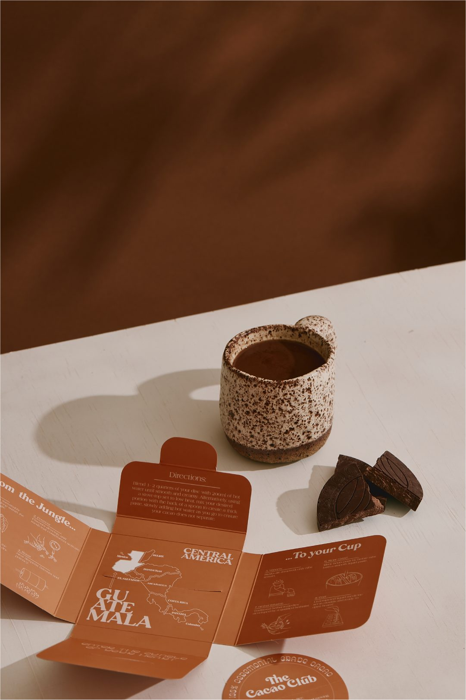
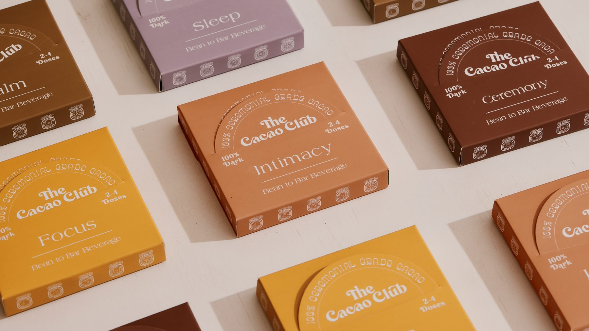

Brand, packaging, web, social
The Cacao Club
A ceremonial cacao brand that explains an unfamiliar product without the wellness fluff.
The Cacao Club sells bean-to-bar ceremonial cacao drinks in five blends: Ceremony, Calm, Focus, Intimacy and Sleep. The brand had to feel warm and grounded, and make a new kind of product easy to understand.
Result
Grew the social following from a small base to thousands of followers.
What I did
- Brand identity and a colour-coded packaging system, one colour per blend
- Packaging inserts, including a Guatemala origin map
- Website design
- Educational content: A Beginner’s Guide to Ceremonial Cacao, and The Science / The Tradition cards
- Social strategy and growth






